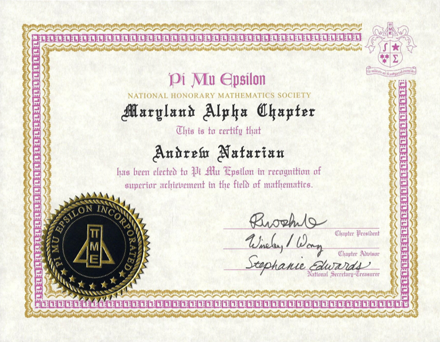

The Maryland Alpha Chapter of PME is dedicated to promoting mathematics within and around the community. We also emphasize service activities and social events to better our members, the UMD Math community, and local schools. The national purpose of PME is to promote scholarly activity in mathematics among the students in academic institutions.
Developed a desktop strategy game using Unity and C# in Visual Studio. View the source code and play the game HERE
Studied coding theory and error detection with a graduate student mentor through the Directed Reading Program at the UMD Mathematics Department. Developed an algorithm for constructing optimal binary codes to minimize errors during transmission of codewords through binary symmetric channels. View a program that I wrote for my research project HERE
Designed t-shirts for the UMD math department in the Fall of 2017.